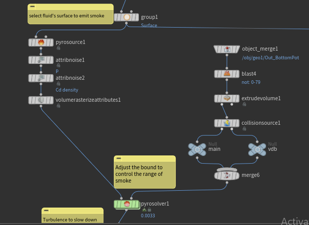

← 部落格 × Harbour
Bomin Kim（特效）


第 3 週
團隊成員
1 月 21 日
Bomin Kim（特效）
Caleb Stovall（3D／2D）
Mojie Tang（特效）
Sydney Relkin（合成）
Yiqi Zheng（特效）
SCAD × HARBOR － 第 3 週
大家好，這是我 SCAD × Harbor 部落格的第三週！
導師回饋：
Vi：
-
顏色：冷色調
-
最後一個鏡頭？
Hailey：
-
參考：OK
-
最後一個鏡頭？
-
藍色調：OK
Allie：
-
背景：確保前後一致
Billy：
-
傳一個參考過來
-
Kyle：為什麼要 1A／B／C？
-
不要拍到那個人的臉
-
不要拉遠，專注在特寫
-
鏡頭 4A：確保一致
-
最後一個鏡頭：不需要手
Olivia：
-
考慮轉場／產品
-
最後一個鏡頭：不需要手
來賓 Yong Duk Jhun：
-
想想為什麼有人會買這支手錶
-
它會帶給他們什麼感受？
討論後，我們決定把最後一個鏡頭從關上錶殼改成打開錶殼，象徵歡迎顧客購買。我們也加入了從旋轉齒輪到手錶的轉場。至於來賓 Yong Duk Jhun 的建議，經過仔細討論並考量時程後，我們認為現階段可能無法實現。
定稿預視：
熔融白金
之前：
我用 Vellum 產生粒子，再用 vdbfromparticlefluid 節點直接把粒子轉成流體。但結果邊緣看起來鋸齒不平，模擬也跑得很慢。
修改後：
我改用另一種方法：VDB 轉換加上 VDB 平滑，能更細緻地控制流體表面的平滑度與細節。這個方法也能確保幾何體乾淨細緻，減少鋸齒邊緣或不規則的面。
煙霧：
煙霧：我也用 Pyro 在倒出熔融白金時加了一些煙霧，並依照法線屬性選取表面，在 group 節點中調整方向。
